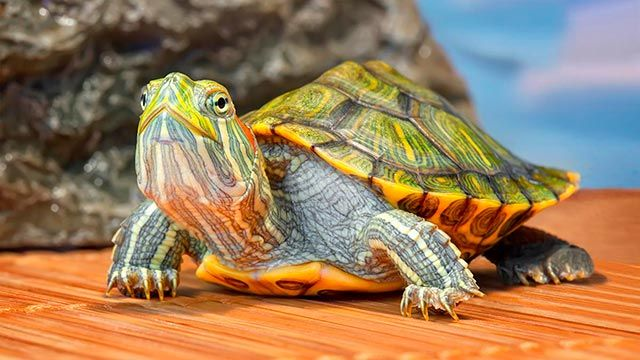
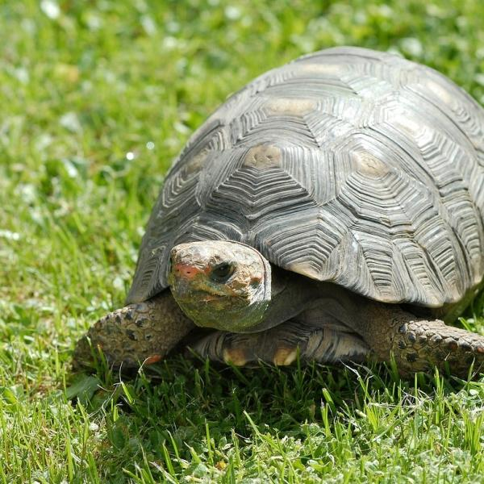
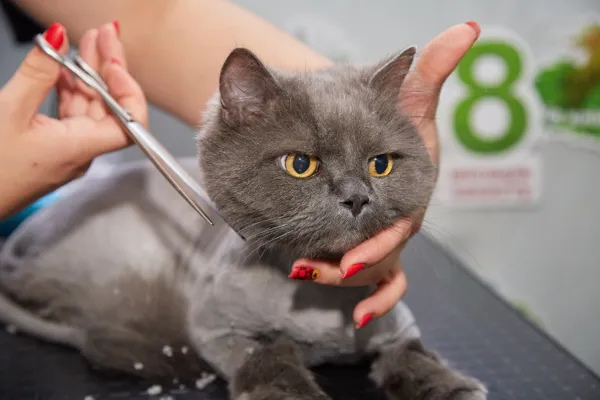
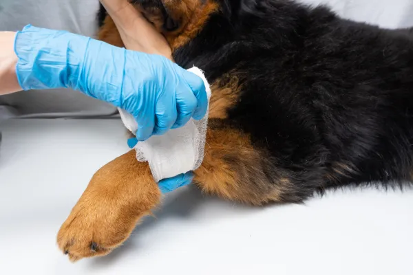
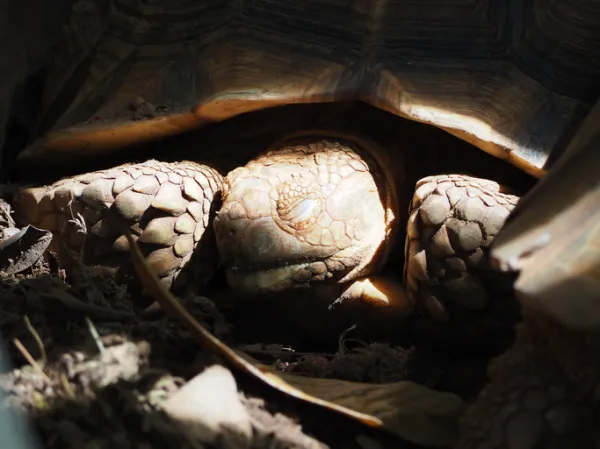

¡Explora el Reino Animal en Casa! Todo lo que Necesitas Saber sobre Perros, Gatos y Tortugas: Cuidados, Comportamiento y Convivencia Armoniosa
¡Bienvenido a nuestra galería de imágenes de mascotas! Sumérgete en un mundo de ternura y diversión mientras exploras nuestra colección de adorables gatos, leales perros y encantadoras tortugas
Conocidos por su aspecto majestuoso y su pelaje largo y exuberante.
Gatos Cartujo
Conocidos por su aspecto robusto y suave, su pelaje denso y su personalidad gentil y tranquila
Perros Pug

Conocidos por su aspecto distintivo y su personalidad encantadora
Perro Salchica

Conocidos por su cuerpo largo y bajo, similar al de una salchicha, y sus patas cortas y robustas
Tortuga de Agua
Conocidos por su aparciencia única y su comportamiento tranquilo
Tortuga de Tierra
Conocidos por su caparazón duro y su comportamiento tranquilo
Guía de Cuidados: Mantén a tus Mascotas Felices y Saludables
¿Se le puede cortar el pelo a un gato?
¿Qué le pasa a un gato si le cortas el pelo? ¿Es peligroso para él? ¿Se puede cortar el pelo a los gatos en verano? La respuesta es que depende. En general los gatos no necesitan que se les corte el pelo pues ese pelaje les protege de las condiciones adversas del medio, pero si es verdad que bajo determinadas condiciones como un exceso de calor ambiental, mala higiene del pelo o problemas de piel o digestivos en un gato de pelo largo puede tener ventajas para prevenir trastornos como las bolas de pelo.
¿Cómo curar una herida a un perro?
Una de las informaciones clave que tienen que tener los cuidadores caninos es cómo curar heridas de perros, en todos sus tipos de gravedad, desde pequeños rasguños o raspaduras hasta heridas profundas, abiertas o infectadas. En todos los casos es importante mantener la zona limpia y desinfectada, así como evitar que nuestros perros se puedan lamer o raspar la herida; pues solo alargará el proceso de cicatrización y predispone a la infección de la herida.
¿Las tortugas hibernan?
Las tortugas son poiquilotermas, esto quiere decir que no pueden controlar su temperatura corporal sino que esta depende de la temperatura ambiental. Ahora que sabes esto, ¿te interesa saber si las tortugas que tienes en casa hibernan?